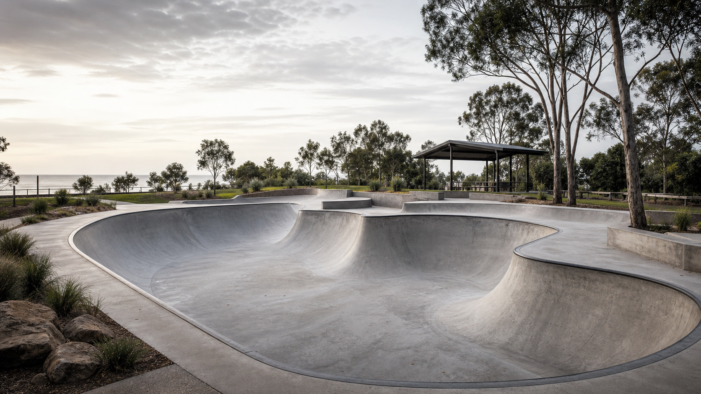

Tender fact
Tender snapshot
PDG-20842-1 asks for design-and-construct refurbishment of the Windemere Road Park skate bowl, including repair, new elements, ancillary works, certification and management plans.
OpenNot for construction / exploratory tender workspace
A practical workspace for understanding the Redland skate bowl tender, testing the partnership fit, and keeping the response pathway honest.
This workspace turns the tender pack into a practical conversation tool for Luke, Paolo and Kieran. It supports a calm bid/no-bid decision, then a compliant response only if the partnership feels workable.

PDG-20842-1 asks for design-and-construct refurbishment of the Windemere Road Park skate bowl, including repair, new elements, ancillary works, certification and management plans.
OpenWorking assumption: mandatory site inspection at 10:00 am Wednesday 15 July 2026. RSVP by 2:00 pm Tuesday 14 July 2026.
OpenLuke, Paolo and Kieran are testing fit. The workspace should help the team proceed, pause or no-bid respectfully.
OpenProceed only if VFG can lead the technical/design/build response and the specialist pathway is credible.
OpenPublic VFG material maps well to consulting, design, construction, maintenance, repairs and skatepark-specific delivery evidence.
OpenTender narrative, information design, role clarity, local benefit framing, task tracking and concept drafting from supplied intent.
OpenCertification pathway, BOQ/pricing, drainage, role boundaries, non-conforming returnables and contract risk need early attention.
OpenSeed questions are ready for the site visit and can be edited in data/questions.json.
OpenConfirm attendance, collect VFG evidence, review BOQ structure, map returnables and decide whether the partnership should bid.
OpenThe public version is an organising layer, not the tender submission. Raw source documents, prices, signatures, private contact details and filled returnables stay out of GitHub Pages unless the whole team has agreed otherwise.